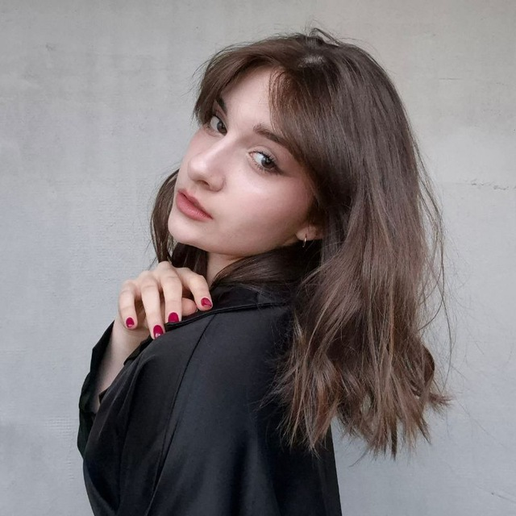

☰
HOME
EN
ENGLISH
РУССКИЙ
한국어
THEME PALETTE
Background
Main Text
Accent
RESET ALL
PIXEL TRAIL
Enabled
Color
↺
Opacity
Pixel Size
Lifetime
TEXT GLOW
Enabled
Color
↺
Range (px)
Home
Works
Achievements
News
Contacts

PROFILE PIC
"Quote"
Some text
MY WORKS
ACHIEVEMENTS
LATEST NEWS
GET IN TOUCH
TELEGRAM
GITHUB
VKONTAKTE
INSTAGRAM
TIK TOK
*Компания Мета признана экстремистской на территории Российской Федерации
×